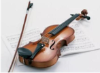
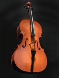
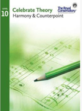
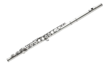

TCEC 大师介绍
世界级小提琴家

- 美国茱莉亚音乐学院博士，乐团首席小提琴，CBC 电台常驻独奏音乐家，演出遍布全世界，小提琴作品录制了多张唱片
- 作曲家，艺术家，两家弦乐团的主要创建者，成就获得高度评价
- 其传授给学生的不仅是演奏技艺，更带领学生探索理解音乐内涵
- 演奏风格细腻动人，教学经验丰富，培养众多杰出音乐家
首席大提琴家

- 加拿大乐团的首席大提琴，演出专场遍及欧洲、北美及韩 国，灌录了大提琴独奏，及与其他乐器协奏的唱片
- CBC 加拿大国家电台音乐家，美国音乐家联合会和美国弦乐 教师协会成员
- 皇家音乐学院任教三十余年，在欧洲及加拿大开设大师班
钢琴家 & 教育家
- 钢琴家，演出足迹遍布于世界各地，载誉无数
- 教育家，曾任教麦吉尔大学、海福格尔学院
- 启发性教学，风格生动，特别在即兴演奏，重奏，协奏方面造诣深厚
- 指导的多名学生在各大音乐比赛中表现优异，Crescendo International Competition 组委会授予优秀导师称号
作曲家 & 艺术家

- RCM皇家音乐学院 音乐理论教材的编纂者，RCM 考试委员会成员、考官
- 加拿大音乐教师培训专家
- 多所北美音乐学院客座教授
- 指导学生探索音乐创作的深层次内涵
音乐学院长笛教授

- 曾任教于 UBC 不列颠哥伦比亚大学、NYU 纽约大学音乐学 院、麦克马斯特音乐学院，各音乐学院客座教授，20 多年教 龄
- Caledon Music Festival 艺术总监，参与评审加拿大各地的音 乐节
- 世界各地巡演，欧美和亚洲;多伦多室内乐团，交响乐团的成 员;与众多作曲家紧密合作，并首演了多部世界级作品
- 善于发掘学生潜力，提升创造力